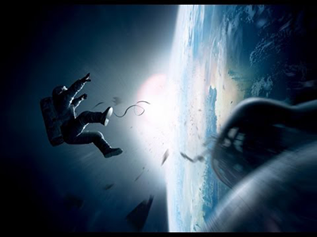
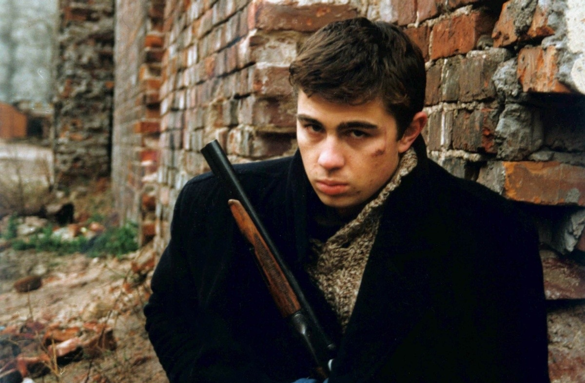

Побег из Шоушенка
Успешный банкир Энди Дюфрейн обвинен в убийстве собственной жены и ее любовника. Оказавшись в тюрьме под названием Шоушенк, он сталкивается с жестокостью и беззаконием, царящими по обе стороны решетки. Каждый, кто попадает в эти стены, становится их рабом до конца жизни. Но Энди, вооруженный живым умом и доброй душой, отказывается мириться с приговором судьбы и начинает разрабатывать невероятно дерзкий план своего освобождения.

Наркоз
Клай Бересфорд вынужден лечь под нож. Однако в процессе операции на сердце он неожиданно приходит в себя. Находясь в парализованном состоянии, будучи не в силах пошевелить ни рукой, ни ногой, он, тем не менее, чувствует каждое касание скальпеля к своей плоти…

Астрал
Джош и Рене переезжают со своими детьми в новый дом, но не успевают толком распаковать вещи, как начинаются странные события. Необъяснимо перемещаются предметы, в детской звучат странные звуки… Но в настоящий ужас приходят родители, когда их десятилетний сын Далтон впадает в кому. Все усилия врачей в больнице помочь мальчику безуспешны.

Гравитация
Доктор Райан Стоун, блестящий специалист в области медицинского инжиниринга, отправляется в свою первую космическую миссию под командованием ветерана астронавтики Мэтта Ковальски, для которого этот полет — последний перед отставкой. Но во время, казалось бы, рутинной работы за бортом случается катастрофа.
Шаттл уничтожен, а Стоун и Ковальски остаются совершенно одни; они находятся в связке друг с другом, и все, что они могут, — это двигаться по орбите в абсолютно черном пространстве без всякой связи с Землей и какой-либо надежды на спасение.
Районы
Алма-Ата, 1987 год. Главный герой фильма - 16-летний Арсен, который из пригорода переезжает в центр города и идет в новую школу. В новой школе он заводит дружбу с одноклассниками, активными участниками так называемых «Районовских движений». Вместе с этим, Арсен сталкивается с уличной, подростковой иерархией и насилием. И перед ним встает выбор, стать как все или остаться верным самому себе.

Брат
Демобилизованный из армии Данила Багров возвращается в родной город. Скучная, однообразная жизнь провинции не может устроить крепкого русского парня, и он решает поехать в Питер, испытать себя. Тем более, что там, по слухам, уже давно процветает его старший брат. Но «новая русская» жизнь северной столицы оказывается слишком неожиданной, а родной брат Данилы зарабатывает на жизнь заказными убийствами. Даниле предстоит многое узнать… и со многими разобраться…

Кунг-фу панда
Главным героем здесь становится большая и неповоротливая панда по имени По. Вс. Жизнь наш новый друг мечтал о славе в сфере боевых искусств, но, как это часто бывает, жизнь его была очень далека от исполнения мечты. Да и сам медведь был мало похож на воина или хотя бы на ученика воина, ведь все знают, какие панды неуклюжие и толстые. Поэтому все, что оставалось нашему герою – это продавать лапшу и лелеять свою мечту.
Но однажды великий мастер по имени Угвей выбирает Воина Дракона, который должен обрести невероятную силу и мощь и победить силы зла. Все ученики мастера, долго и упорно тренировавшиеся, находятся в предвкушении того, что учитель назовет его имя, а он выбирает…нашего героя!
Рик и Морти
Сериал посвящён злоключениям циничного безумного учёного Рика Санчеза и его наивного, капризного и неуверенного в себе внука Морти; создатель сериала Ройланд озвучивает обоих персонажей. Сериал, выросший из хулиганской анимационной пародии на франшизу «Назад в будущее», получил чрезвычайно высокие отзывы критики, особо отмечавшей его оригинальность, креативность и чувство юмора.

Властелин колец
Всё началось с отливки великих колец. Три из них были отданы бессмертным эльфам, семь — пещерным гномам, а девять — королям людского рода. Но в пылающей пещере вулкана Ородруин Тёмный властелин Саурон тайно выковал ещё одно — Единое Кольцо, призванное подчинить себе все остальные. В этом Кольце была сосредоточена вся злоба и мощь повелителя Мордора, задумавшего положить конец свободе народов Средиземья и подчинить их себе навеки. Последний союз людей и эльфов выступил против армий Мордора. Правителю Гондора Исилдуру, сыну павшего в бою короля, удалось отрубить Саурону палец и завладеть Кольцом. Но оно поработило его волю и привело к гибели. Кольцо было потеряно и пролежало на дне реки две с половиной тысячи лет. Затем оно попало в руки существа по имени Голлум, который обладал им в течение столетий, пока Кольцо не было найдено хоббитом Бильбо Бэггинсом.
Криминальное чтиво
Винсент Вега и Джулс Уиннфилд, бандиты на службе у Марселласа Уоллеса, должны забрать принадлежащий их боссу чемодан у Бретта и его компаньонов, предположительно вследствие нарушения последними договорённости. По дороге они обсуждают данное Уоллесом Винсенту поручение «вывести в свет» вечером того же дня Мию Уоллес, жену босса. Винсент рассказывает о своей недавней поездке в Европу. Идёт известный диалог о «Quarter Pounder», сэндвиче из McDonald's, который в Европе из-за метрической системы называют «Royal with Cheese». Добравшись до квартиры, после непродолжительного диалога и цитирования искажённого отрывка из проповедей пророка Иезекииля, Джулс и Винсент убивают Бретта и одного из его компаньонов.
Жить
В основе сюжета фильма — три параллельные истории, герои которых сталкиваются с тяжелейшим испытанием в жизни — потерей близких людей. Маленький мальчик теряет отца, молодая девушка — любимого человека, а у женщины средних лет погибают две дочери-двойняшки. В каждой истории свой финал, каждый выбирает сам, как жить дальше. Все три линии показаны на фоне современной жизни в российской глубинке, с самыми острыми бытовыми и социальными проблемами современной России.
300 спартанцев
Спартанцы отбивают многочисленные персидские атаки. Персы бросают в бой свои лучшие силы — колоссальных боевых слонов, закованного в броню носорога, колдунов с пороховыми бомбами и элитную гвардию с берсерком-великаном. В лагере Ксеркса монструозный палач с клинками вместо рук рубит головы потерпевшим неудачу военачальникам. На переговорах с Ксерксом Леонид отвергает предложение покориться и стать предводителем всей Греции, «понести боевое знамя Ксеркса в самое сердце Европы». Персы вновь идут в атаку, но все их усилия оказываются тщетными.